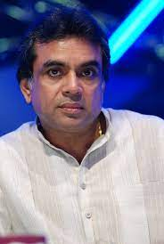
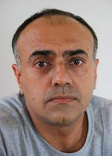

Uri:The Surgical Strike is a 2019 Indian Hindi-language action film written and directed by debutant Aditya Dhar and
produced by Ronnie Screwvala under the RSVP Movies banner. A fictionally dramatised account of the true events
of the retaliation to the 2016 Uri attack.It tells the story of Major Vihaan Singh Shergill of the Indian Army, who played
a leading role in the events. The film was released on 11 January 2019[12] and grossed ₹342.06 crore
(US$49 million) worldwide. It has received huge critical acclaim and ranks among the highest-grossing Indian films.
Divided over five chapters, the film chronicles the events of the surgical strike conducted by the Indian military against
suspected militants in Pakistan occupied Kashmir. It tells the story of the 11 tumultuous events over which the operation
was carried out. Indian army special forces carry out a covert operation to avenge the killing of fellow army men at their
base by a terrorist group. On the night of 28 September, the commandos leave for the strike in Pakistan Occupied Kashmir in
Mi-17 helicopters. During the mission, Vihaan's helicopter is forced not to cross the Line of Control due to the latest
intelligence from spies in Pakistan that the Pakistani Army has deployed an "AWAC" Early Warning Radar-based Surface to Air
all the terrorists on the two launchpads. Similarly, other commando teams also manage to kill all of the terrorists. Vihaan
comes to their rescue by firing back at the Pakistani gunship, thus driving it away and eliminating the machine gun bunker.
His team successfully crosses LoC on the Indian side with no casualties. The rest of the assigned teams are also successful
and are back with no casualties. Vihaan lands at Hindon Air Force Station at Ghaziabad, Uttar Pradesh. The film ends with him
Pallavi, Govind, and the commandos happily having a formal dinner with the Prime Minister. In a post-credits scene, Zameer, a
Pakistani minister, wakes up and shouts in frustration while seeing the news of India's successful surgical strike. The scene
cuts to a title card reading "Jai Hind" (Victory to India).